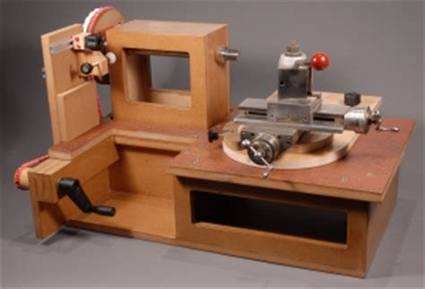
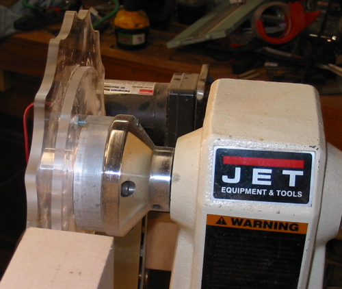
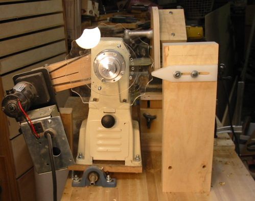

There are a number of approaches that could be taken to achieve ornamental turning.
This page outlines the ones I know, and will probably trigger new ideas in the reader.
Index of Approaches
Object: moves (rocks or pumps) & rotates
Cutter: stays fixed
To make these motions happen requires movement that would not happen easily on a traditional lathe.
Rocking requires the head stock to rock back and forth. In the traditional approach, the headstock is mounted on shaft that provides for the rocking motion.
The upper shaft in the headstock is used to rotate the object.
The lower shaft in the headstock is used to allow for the rocking motion.
Pumping is lateral movement of the upper shaft in the head stock whilst also rotating.
This would be a problem if the shaft were held in bearings, so it is typically held in bushings, or the shaft may float on a layer of oil (e.g., journal bearings).
Whilst all that object movement is happening, a cutter, held in a cutting frame (or drill spindle) is cutting into the object. The cutting frame stays fixed, held in the QCTP on a cross slide.
The video below shows all these things happening together.
Rose Engine Woodworking | Lesson 1
The MDF Rose Engine (shown below, left) was designed by Jon Magill, and uses the traditional approach. The first designs did not make pumping motions; however I believe he has added that functionality in later designs. Others have also come up with designs to achieve this in different ways (see also, the YouTube video of Pat Miller's design).
MDF Rose Engine
This is a YouTube video showing Jon's MDF Rose Engine in use :

MDF Rose Engine Lathe
Advantages
This style of machine is widely used, and there are loads more people who can help a new person get started.
If you are considering whether you want to pursue this hobby, this can be a great way to get started. The design is well documented, and easy to follow. also, the investment is not high, and the parts can be resold if the artist choses to abandon this craft.
Disadvantages
Depending on what the artist wants to do, the design may have to be started on a traditional lathe (or finished there), and moved to an ornamental lathe.
These movements allow for the introduction of error.
The amount of error could be small enough that it won't matter.
Error introduction can be minimized by holding the chuck in the lathe via a Morse taper adapter (held in held into place with a draw bar) or a collet chuck.


Richard Coers' Rose Engine Lathe Images courtesy Richard Coers
Richard Coers first showed an approach on the American Association of Woodturners'Forum where a smaller lathe (a midi lathe) is rocked. Fundamentally, the midi lathe becomes the headstock in an ornamental lathe.
Richard's approach is to mount a rosette on the outboard side of the midi lathe's headstock. Pictures of this approach are on the right.
I've not seen the work he makes with it (I think he does pen turning on it), but I do like the idea of reusing equipment that is otherwise unused. So I took that approach and flipped it around though.
My first rose engine lathe held the rosettes on a shaft between the headstock and tailstock, and the object was held in the outboard position (the headstock was rotated 180 degrees).
Videos of my first rose engine lathe in operation are below.
Advantages
If you are considering whether you want to pursue this hobby, this could be a good way to get started. The investment is not high.
This approach reuses older machines (which you may have sitting around, taking up space, or just something on which you stub your foot).
Disadvantages
The midi lathe is much heavier than a typical rose engine lathe's headstock, and needs quite a bit of work to stabilize it's motion. This is a pretty significant design consideration.
This lathe cannot be modified to accommodate a pumping motion.
This lathe also takes up quite a bit of space; far more than many other options.
Each of these machines is a one-off, and the craftsman or craftswoman who wants one will have to build their own.
There is not a large community of people to help if you get into problems. (The ornamental turning community is pretty small already, but one-offs like this provide for an even smaller community.)
Update : I have abandoned this approach, and built an MDF rose engine lathe. There are a number of reasons, but suffice it to say, the user community for MDF lathes makes the change worthwhile.
Mr. Tallack told me that ornamental turning just took too long to make a piece.
So he designed a lathe that moves the object quite fast, whilst a router cuts the object.
Rod had a YouTube video showing his lathe in action; however I cannot find it anymore. I watch this thing working and think, something must surely be falling apart soon. But, I've corresponded with him, and he assures me the machine is quite stable.
Advantages
The system is really fast, compared to more traditional means. I read that his system could make a new object in 45 minutes !
Disadvantages
The machine is a one-off, and the artist who wants one will have to build his own (or contract it through a machine shop).
There are limits to what can be made on this system.
The cross slide is mounted to a platform which is attached to two sets of linear bearings (not well shown in this picture). These linear bearings enable movement of the platform in the X or Y axis (or both).
The motor (G) that drives the spindle's rotational movement also drives a shaft (H) which rotates the rosette (E). The rosette's shape then drives the movement of the cross slide along the linear bearings.
The motor (G) also drives a leadscrew (F). This leadscrew provides for driving the cutter's movement along the Z axis, like would be needed to use a curvilinear slide.
This approach greatly interests me.
I believe a chassis can be made to fit on the bed of a traditional lathe, and this chassis can also use linear bearings to work like the one on the Paul Cler lathe for driving the action of the cutting frame.
The lathe's spindle can also be outfitted with a stepper motor to make this happen, and to drive the lathe shaft's rotation (like the motor labeled with G, above does).
Ornamental Turner Interview and Shop Tour
Jean Wiggins inherited a Cler lathe from her husband. In this video, she gives a tour of her shop and lathe, gives lessons learned in Ornamental Turning, and tells stories about various past projects.
Rose Engine Attachment for Any Lathe
The video left from cbwim implements such Cler's approach. He used linear bearings for the movement along the X and Z axes. And he is rotating the spindle by hand. Turning the spindle without automation is typical for the guilloché he's doing.
Advantages
Adding a Paul Cler type chassis to a traditional lathe will allow the ornamental turner to :
Make larger pieces.
Add the ornamental embelishments to a piece which was started on the same lathe as it was finished.
By not moving the piece between lathes, the ability for introducing error is minimized.
Disadvantages
The traditional lathe can't be used for other work until the object is finished.
There are more moving pieces, so preventive maintenance will be quite necessary.
There doesn't seem to be a large community of people to help if you get into problems.
Bill Ooms and Dewey Garrett are also the leading pioneers in the use of computerization as an approach to ornamental turning. Both have YouTube channels with videos worth viewing:
Bill and Dewey are very accomplished artists who have created great works. The piece that I consider to be Bill's most beautiful is shown to the left (he was very kind to share it). Dewey's work has been featured many places, and he has links to those on his web site.
In my correspendence with Bill, he has stated that he prefers the term "computer-assisted" over "CNC".
His reasoning is that the use of a computer to help the artist achieve his goal is quite different from the typical use of computer numerical control (CNC).
CNC is often identified with the repeated production of given object, not one-off artistic work, but as noted in the video from Dewey, great artistic work can be done on a computer-driven lathe.
Bill documented the building of his Computerized Ornamental Lathe (COrnLathe™) on his web site.
That site has a load of great information, and I won't take the time to repeat it here.
Bill is to be greatly commended for freely sharing three things :
The ornamental turner can add the ornamental embellishments to a piece which was started on the same lathe as it was finished.
By not moving the piece between lathes, the ability for introducing error is minimized.
Once this machine is up and running, it can be programmed to make a lot of the types of cuts that would have required expensive or complicated apparatuses. These include :
This requires the user to maintain the computer systems.
All equipment in the workshop requires preventive maintenance, but patching, software maintenance, etc. are all activities I'd rather leave at work.
I want this to be a hobby I can enjoy.
Bill keeps his two computers networked together, but not connected to the Internet. This helps with not having to always keep the systems up-to-date to prevent viruses or other problems.
The technologies being used require constant vigilance to keep them operational.
If a technology is abandoned by a vendor, the user will have to step back and find a new path to address the need.
As Bill notes on his site :
Apple, Oracle, and Microsoft make changes faster than I can keep up with them. So now I'm only providing the compiled software package for the same version that I'm using on my own Mac computers in the shop.
There doesn't seem to be a large community of people to help if you get into problems. But possibly, with the growth of hobbyist use of Arduino and CNC, that may change.
Disclaimer : eMail comments to me at OTBookOfKnowledge @ Gmail.com. The process of woodturning involves the use of tools, machinery and materials which could cause injury or be a health hazard unless proper precautions are taken, including the wearing of appropriate protective equipment.